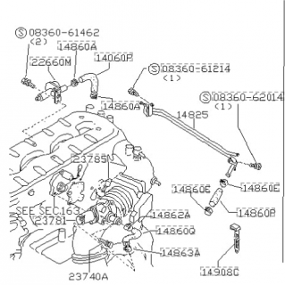

-
Earlier this year when I fixed my AC vents I ended up cutting a lot of the coolant hoses leading to the heater core. I bought new ones from nissanpartsdeal.com for quite the price, I recall one of the tubes being around $50. Is there a reason to stick with the parts fiche on this and not simply go with generic tubing that is rated for the application I'm using it for?
For example, in the parts fiche below, the air regulator hose 14060B costs $12 (which isn't awful) but I'm willing to bet that I can find some tubing that will do the same job for less. Same for things like the turbo oil return tube, the some of the coolant lines leading around the rear of the engine, etc.
Any thoughts? Thanks in advance.
'85 2+0 Turbo -
just be happy that these parts are still available. its going to pretty much suck later on as parts are becoming more and more unavailable everyday. believe it or not i have found that nissanpartsdeal.com has cheaper factory parts than some other nissan websites. if you're going behind there, you might as well replace everything that you can. surely you can do as you like, but you don't want to have to go back in there and replace those hoses again if they end up failing. if i was you, eat the price and stick with the nissan hoses. those coolant lines can still be replaced. the turbo oil return tube cannot, as it is NLA. besides, its a metal tube that will not break down and wear out like a hose line will… i hope that you're not in need of one, sadly i just tossed an extra tube that i had laying around.
Bon -
With hoses that deal with fuel/oil vapors, they have to be "fuel rated" otherwise they will swell and degrade. A 90deg pre-bent hose for the regulator is worth the 12 bucks.
For the turbo drain line, i dragged my feet a long time on this, looking at different hose types and brands, as bonfire79 said, factory ones are NLA. Again, this hose has to stand up to oil AND heat.
I chose a .75" inner diameter McMaster-Carr PN 9627T21 fluoro silicone hose that is fuel rated and good up to 450deg F. It was almost 30 bucks a foot, but worth it for the 4 turbo cars i have that will eventually need it.
If you have a Parker store near you, they sell industrial hoses. Tell them what your application is and more than likely they will just give you a sample piece. Mine did. Unfortunately i thought it was 5/8" ID and i didn't want to go back and ask for another "free sample" in a larger diameter.

84 AE/Shiro #683/Shiro #820/84 Turbo -
I chose my words poorly, as it turns out my metal oil feed line is still in working order. I need to purchase the short oil line that leads from the turbocharger directly to the oil pan bung, and it seems like nissanpartsdeal.com does still stock that part. I will be ordering this hose. Still I found some parts that were NLAâthe turbo coolant linesâso I will definitely be paying that McMaster-Carr site a visit, thank you for the link Z_karma.'85 2+0 Turbo

Copyright © 2006–. All rights reserved. Privacy Policy